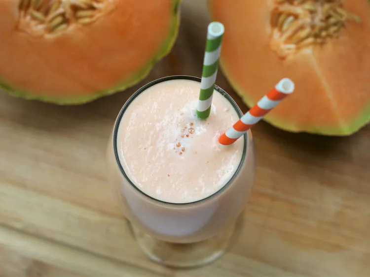

Cantaloupe Frenzy

Description
Cantaloupe is light refreshing smoothie, perfect for hot summer days or after school snack.
Ingredients
- 1 cantaloupe - peeled, seeded and cubed
- 3 tablespoons white sugar, or to taste
- 2 cups ice cubes
Steps
- Place cantaloupe cubes and ice into the container of a blender.
- Process until the ice is in small pieces.
- Add sugar, and puree.
- Pour into tall glasses and serve immediately.
Return Home